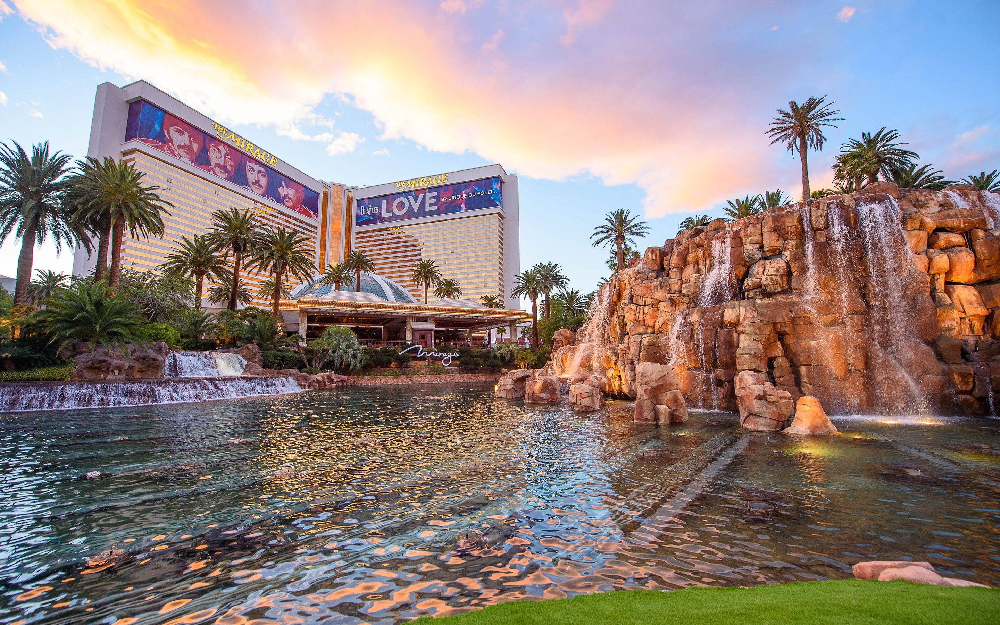
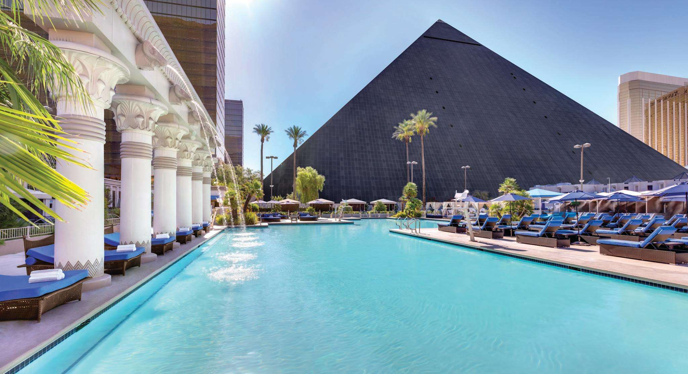
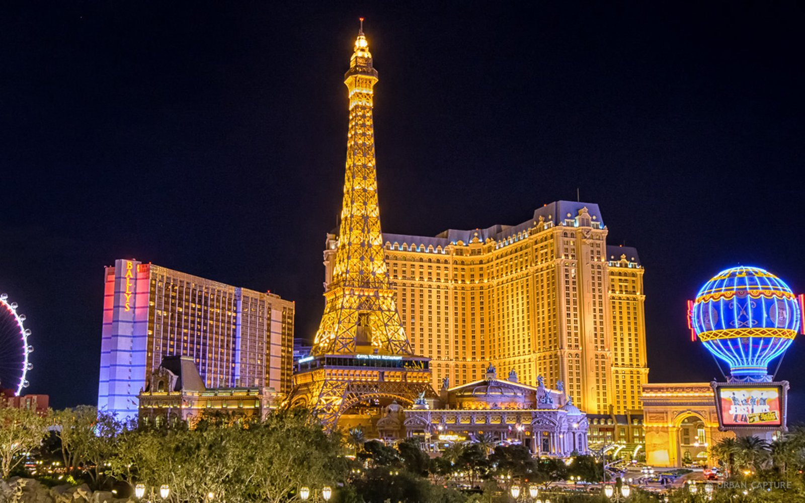

The Mirage

The Mirage ist bekannt für sein tropisches Thema und liegt direkt am berühmten Las Vegas Strip.
Besonders berühmt ist das Hotel für seine spektakuläre
Vulkan-Show, die jeden Abend vor dem Gebäude mit Feuer, Wasser und Musik aufgeführt wird.
Es bietet luxuriöse Zimmer, ein großes
Casino und eine Vielzahl an Restaurants sowie ein bekanntes Delfinarium.
Bei Booking.com buchen
Luxor

Das Luxor Hotel fällt sofort durch seine außergewöhnliche Architektur auf – es ist in Form einer riesigen
Pyramide gebaut und von einer leuchtenden Lichtspitze gekrönt, die nachts weithin sichtbar ist. Das Hotel
ist im ägyptischen Stil gestaltet, mit beeindruckenden Säulen, Statuen und Wandmalereien. Es bietet ein
Casino, spannende Shows und ein Spa, ideal für Erholung nach dem Besuch der
Sehenswürdigkeiten von Las Vegas.
Bei Booking.com buchen
Paris Las Vegas

Wer von Frankreich träumt, ist im Paris Las Vegas genau richtig. Das Hotel verfügt über die berühmte Nachbildung
des Eiffelturms, der sogar betreten werden kann und einen atemberaubenden Ausblick über Las Vegas bietet.
Die gesamte Anlage ist dem Pariser Stadtbild nachempfunden und vermittelt eine romantische Atmosphäre mit
französischer Küche, charmanten Cafés und eleganten Zimmern. Perfekt für Besucher, die neben dem
Unterhaltungsprogramm auch die Atmosphäre der Stadt genießen möchten.
Bei Booking.com buchen